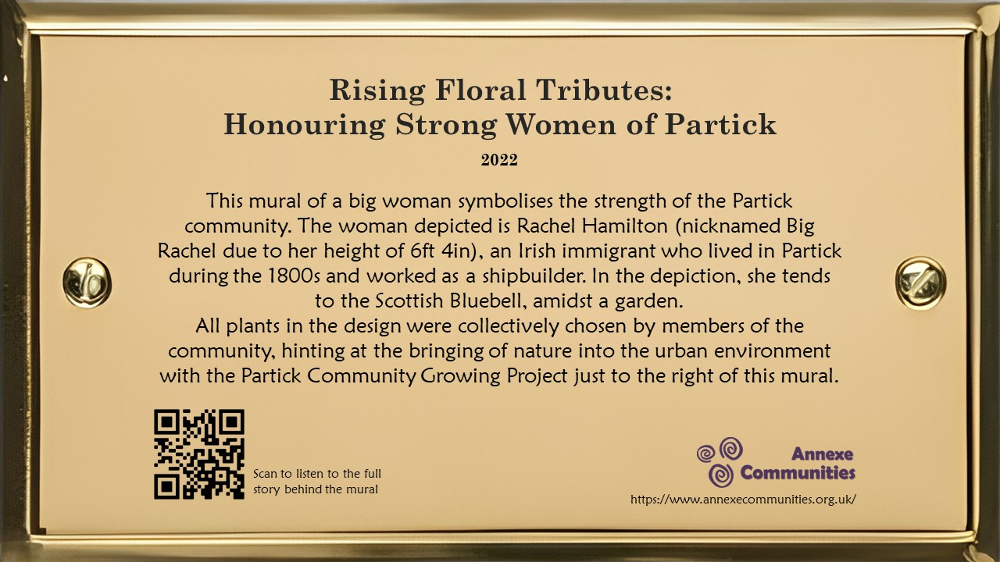

Solution Enhancement and Usability Test Planning
Today, we did a revised storyboard based on Jane’s feedback.
The most significant changes made were:
1. To have the Geocache at the Annexe building itself instead of the mural.
2. To use a QR code to redirect users to the audio guide, instead of having a physical speaker.
3. The Geocache box should contain origami cranes with notes containing stories attached to each one.
These will be made by community members through activities at The Annexe, as suggested by Jane.
In addition, we reached out to the Partick Housing Association to propose a collaboration. The aim is to install a plaque and speaker next to the mural on Purdon Street. To ensure that our vision is clearly communicated to the Partick Housing Association, we created a detailed image of the proposed mural plaque and attached the image to the email for their reference.
Usability Testing
Today, we also learned about how to conduct Usability Testing for our project.
We decided to evaluate the effectiveness of 2 aspects of our solution:
1. Design and placement of the plaque: How does this affect the number of people who stop to read it?
2. Follow the Arrows game: Would this game be appealing to people?
The motivation behind performing a usability test on the design and placement of the plaque is to identify how we can make the plaque attract the most number of people, maximising its efficacy. As for the Follow the Arrows game, given that it would involve us and The Annexe communicating with multiple businesses and organisations, it may be best to first ascertain whether or not this aspect would be well received by passers-by.
For aspect #1, we will place a sample version of our plaque at different positions of the wall where the mural is painted, to see if that affects the number of people who stop by to read it.
(Page 31, point 2 of the Smithsonian Guidelines for Accessible Exhibition Design suggests that a plaque mounted with its centreline at 1.37m above the ground is optimal)
We will then observe footfall around the mural area and the time they spend reading the information. With the qualitative data obtained from our observation, we can then identify the best design and placement to improve the number of people who stop to read it.
For aspect #2, we are thinking of conducting observational research, instead of usability testing. This could be done by pasting some stickers of arrows on the walls along the way to the Annexe building, with us giving candy as a small reward to encourage participation, analyse if there will be any passers-by who will be attracted and follow the arrow’s directions.
We will observe the number of people who followed the arrows to the destination, the number of people who passed by and noticed the first arrow, as well as their behaviour in looking for the next arrow so that we can make adjustments to the arrow’s design or placement.